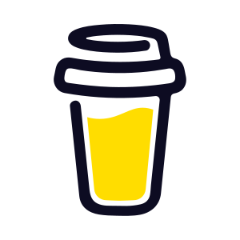

| Опц | Что донести или дослать по почте | Г | С | Р | ✓ | 🖶 | ||||
|---|---|---|---|---|---|---|---|---|---|---|
| Что можно сделать очень заранее | ||||||||||
| Легко доступно сразу, нужно просто напечатать или сделать копию | ||||||||||
| Набор документов, необходимый, чтобы заявка была формально принята к рассмотрению | ||||||||||
| Такой набор годится для отправки почтой и подачи через канцелярию. Позже вам позвонят и согласуют дату и время личного визита. В назначенный день вы должны принести оригиналы всех необходимых документов (паспорт и прочее) и все дополнительные документы, описанные в полном варианте чек-листа. | ||||||||||
| На практике во многих воеводствах допускается подать еще меньший набор, отложив, например, оплату до личного визита. Тем не менее, эта практика не гарантирует отсутствие к вам юридических вопросов в последствии, поэтому для полной уверенности лучше подать базовый набор документов без исключений. | ||||||||||
| Если поменяли паспорт | ||||||||||
|
Копия + оригинал для сверки
всех
непустых
страниц
актуального паспорта
Под копией здесь и далее понимается прямая ксерокопия, либо распечатка заранее отсканированного документа, либо распечатка как можно более качественно выполненной фотографии (без искажений типа "трапеция" или "подушка", без теней и т.п.) Рекомендую один раз отсканировать весь паспорт и сделать один документ PDF или Word — потом может еще не раз пригодиться для распечатывания. Кроме того, готовый файл удобно печатать по два разворота паспорта на одну сторону A4, в результате 17 разворотов помещаются на 5 двухсторонних листах A4. У меня такой подход:
Скрепите канцелярской скрепкой листы с копией паспорта. В день сдачи отпечатков надо будет показать оригинал паспорта, чтобы копию могли заверить. Предыдущий паспорт ужонду не интересен, за исключением случая, когда в нём стоит действующая виза, на основании которой вы пребываете в Польше в данный момент. Т.е., допустим, вы въехали по визе, затем поменяли паспорт на новый и только после этого подаёте документы на побыт. Поскольку это ваша первая подача, в заявке в пункте об основании текущего пребывания в Польше вы отметите опцию "виза", а значит вам надо приложить к делу копию визы, если это возможно. Надеюсь, при замене паспорта вы сообщили (написали заявление) о том, что вам нужно сохранить старый паспорт ради действующей визы. В этом случае вам должны были отдать старый паспорт (целый, либо проштампованный "аннулировано", либо пробитый дыроколом, либо просто лишь одну вырванную страницу с визой), поэтому у вас должна быть возможность предоставить в ужонд копию визы, по которой вы въехали и легально пребываете в данный момент. Если это именно ваша ситуация, в этом случае помимо копии актуального паспорта вам нужно также приложить копию визы из старого паспорта и не забыть показать ее при сверке документов. |
+ | + | + | |||||||
| + 1-2 дополнительных копии страницы с фото (зависит от воеводства) | + | + | + | |||||||
| + копия страницы с фото из паспорта Главного подающегося (ребенку - каждого родителя) | Г | Г С | ||||||||
|
При повторной подаче — копия децизии и карты + оригиналы для сверки
Если в данный момент вы пребываете в Польше на основании не визы, а какой-либо карты побыта, приложите копии децизии и карты побыта (с обеих сторон). В день сдачи отпечатков надо будет показать оригиналы децизии и карты, чтобы их копии могли заверить. Копии я делал вместе на одном листе: на одной стороне — копия децизии, на другой стороне — копии обеих сторон карты побыта. У каждого члена семьи своё основание пребывания в Польше и соответственно, своя копия децизии и карты. Если один член семьи (например, муж, ведущий деятельность) пребывает на основании карты побыта, а другой член семьи (например, жена или ребенок, приехавшие в Польшу позже) — на основании визы, в этом случае прикладывать копию децизии и карты мужа нужно только ко внёску мужа. |
+ | + | + | |||||||
| Подтверждение присвоения номера PESEL (копия и оригинал для сверки) | + | + | + | |||||||
| Выписка регистрации в CEIDG | + | Г | Г | |||||||
| Копия(-и) контракта(-ов) с клиентом(-ами) | + | |||||||||
| Сразу же, как только продлили или заключили новый договор аренды жилья | ||||||||||
|
Подтверждение наличия жилья (копия + оригинал для сверки)
Для подтверждения наличия места для проживания можно предоставить различные документы:
Договор арендыВ договоре аренды обязательно должны быть явно прописаны все члены семьи, подающиеся на побыт. Что касается срока действия договора, существует общая рекомендация, чтобы на момент подачи заявления на побыт до конца договора было не менее 6 месяцев. Эту рекомендацию не всегда возможно выполнить, т.к. и агентство, и частный лендлорд могут отказаться продлевать договор на следующий период за несколько месяцев до конца текущего срока. Самое главное — договор должен действовать на момент подписания децизии, и это очень важно, иначе будет отказ. Поэтому так: подавайте договор с любым сроком действия, но как только вы смогли подписать продление на следующий период, немедленно делайте копию и отсылайте инспектору почтой, с указанием номера дела, либо сами занесите в канцелярию ужонда. Если у вас бессрочный договор аренды (до уведомления), вам повезло. Подтверждение права собственностиЕсли вы являетесь владельцем квартиры, в этом случае предоставьте odpis księgi wieczystej либо akt notarialny przeniesienia własności, который вы подписывали у нотариуса при оформлении покупки. Разрешение на безвозмездное проживаниеЕсли родственники или друзья позволили жить в их квартире, вы можете оформить документ под названием umowa użyczenia (скачать пример) и предоставить его в ужонд. |
+ | + | + | |||||||
| Сразу же, как только переехали в другую квартиру | ||||||||||
|
Уведомление о новом адресе для корреспонденции
Если у вас поменялся адрес, нужно обязательно предоставить в ужонд oświadczenie об этом, чтобы они знали, куда направлять корреспонденцию Шаблон для Варшавы можно скачать тут. |
+ | + | + | |||||||
| Свидетельство о браке (копия, иметь с собой оригинал для сверки) | + | |||||||||
| Свидетельство о рождении (копия, иметь с собой оригинал для сверки) | + | |||||||||
| Заказать | ||||||||||
| Присяжный перевод свидетельства о браке (копия, оригинал иметь с собой) | + | |||||||||
| Присяжный перевод свидетельства о рождении (копия, оригинал иметь с собой) | + | |||||||||
| Присяжный перевод контракта(-ов) с клиентом(-ами) (копия, оригинал иметь с собой) | + | |||||||||
| Справка с места обучения (копия, оригинал иметь с собой) | + | + | ||||||||
| Потрудиться написать | ||||||||||
| Заявление о работе и налоговых расчётах за прошлый год (т.н. "tabelka") | ? | |||||||||
| Бизнес-план | + | |||||||||
| Oświadczenie o liczbie osób na utrzymaniu | Г С? | С Г? | Г/С | |||||||
| Oświadczenie o wydruku karty bez adresu | + | + | + | |||||||
|
Выглядит крайне сложно? Если не хотите собирать документы самостоятельно и боитесь допустить ошибки, которые могут стать причиной отказа в получении вида на жительства, или же вам необходимо сопровождение на личную подачу из-за отсутствия знания польского языка, могу порекомендовать одного из проверенных помощников по легализации, в зависимости от вашего города. Обращайтесь в личку |
||||||||||
| Что нужно сделать ближе к моменту подачи, чтобы иметь самое актуальное | ||||||||||
| Заказать желательно за 10-14 дней до подачи (справки делаются за 1-7 дней, но действуют 30 дней) | ||||||||||
| Справка об отсутствии задолженности в ZUS (RWN) + UPO | + | Г | Г | |||||||
| Справка об отсутствии задолженности в оплате налогов (ZAS-W) + EPW | + | Г | Г | |||||||
| Частная страховка | ? | ? | ? | |||||||
| Заказать у бухгалтера (заранее уточнить сроки) | ||||||||||
| В феврале-апреле, подав декларацию за завершенный год, можете передать ее инспектору | ||||||||||
|
Годовая декларация (если есть) +
UPO
Годовая декларация, если она есть, это самый веский аргумент наличия стабильного дохода. PIT-28 — декларация рычалтовца. Если пользуетесь другой налоговой системой, в вашем случае будет другой формуляр. Скрепите канцелярской скрепкой листы декларации вместе. Если вы самостоятельно подавали декларацию через сервис Fill-up или другой подобный ему, скорее всего, самой последней страницей скачанного PDF-файла декларации будет UPO, т.е. подтверждение получения сразу добавляется сервисом к файлу. Если же в файле декларации у вас нет UPO, вам нужно его раздобыть. Для этого найдите numer referencyjny (пункт 2 "Nr dokumentu" в самом начале вашей декларации), который выглядит, например, так — 338542085c5ecb738e41290a28fb6fe1, а затем используйте этот номер для скачивания UPO тут. |
+ | Г | Г | |||||||
| Не обязательно, но при желании каждые 1-2 месяца можно досылать свежие документы | ||||||||||
| Ewidencja przychodów / KPiR. | + | Г | Г | |||||||
| ZUS DRA — за каждый месяц. Обязательно приложить UPP | + | Г | Г | |||||||
| Сделать самостоятельно | ||||||||||
| Opłata skarbowa — пошлина за рассмотрение внёска (распечатка чека) | + | + | + | |||||||
| Фотографии 4 шт (3,5x4,5, стандартное фото на польские документы) | + | + | + | |||||||
| Фактуры с подписью. На обратной стороне — распечатка банковского подтверждения прихода | + | Г | Г | |||||||
| Распечатка фирмового счета, где видны операции ИП | + | Г | Г | |||||||
| Распечатка личного счета для подтверждения пребывания | + | ? | ||||||||
| Potwierdzenie ubezpieczenia | + | Г | Г | |||||||
| ZUS ZZA/ZUA | + | Г | Г | |||||||
| ZUS ZCNA | С Р | + | + | |||||||
| Если не подали чек оплаты сразу, то можете донести позже | ||||||||||
| Оплата за изготовление карты побыта (распечатка чека) | + | + | + | |||||||
| Делать в последнюю очередь, чтобы точно понимать, какие документы отмечать как приложенные | ||||||||||
| Wniosek o pobyt czasowy (заявка) — от одной до трёх копий | + | + | + | |||||||
| Анкета предпринимателя | + | |||||||||
| Кому идти в ужонд: всем взрослым и детям 6+ лет (у них берут отпечатки пальцев) | ||||||||||
В зависимости от воеводства может потребоваться копия абсолютно всех страниц, либо только тех, где есть какая-либо информация (виза, штамп, любые отметки). Проверяем своё воеводство тут
В моём воеводстве нужны копии
Чек-лист обработал и скомпоновал в один лист формата А4 Андрей Митин. Информация в основном взята с гитхаб-страницы Евгения Соболева и из чата ИП в Польше. Рекомендую в любом случае почитать гитхаб-страницу и конечно поддержать проект Евгения добровольным пожертвованием.
Прошу задавать любые вопросы, касающиеся подачи на ВНЖ, в чате ИП в Польше. Там много опытных, отзывчивых людей, готовых помогать чуть ли не круглосуточно.
Зарегистрируйтесь в системе MOS, создайте там внёсек, отправьте его, а также распечатайте для подачи в бумажном виде.
В скором времени появится MOS 2.0, заполнение электронной заявки в котором будет приравнено к официальной подаче вместо бумажного документа.
В мазовецком воеводстве пока ещё дополнительно требуется заполнение заявки в системе inPOL.
Устаревший генератор заявки.
Супер-старый шаблон с комментариями по заполнению.
Свежие документы можно либо лично заносить в канцелярию, либо отправлять по почте на адрес канцелярии, указывая на конверте номер дела. Оригиналы документов (например, паспорт или договор аренды жилья) посылать ни в коем случае не надо, только копии. Многие заверяют копии у нотариуса, т.к. при пересылке почтой некому делать сверку с оригиналом. Примут ли незаверенную копию — на усмотрение инспектора.
В случае личного занесения в канцелярию, как показывает практика, принимающий персонал тоже не занимается сверкой копий, так что для уверенности лучше посетить нотариуса в любом случае.
Нужное количество копий ищем тут.
Скрепите канцелярской скрепкой листы каждой копии внёска.
ZUS DRA — ежемесячная декларация о доходах, которую бухгалтер отправляет в ZUS. В частности, она содержит суммарный годовой доход, от размера которого зависит сумма складки здровотней — так ZUS узнаёт, когда вам пора платить увеличенную складку.
Эти декларации подаются с целью продемонстрировать, что вы исправно отчитываетесь перед ZUS о доходах и платите складки ZUS.
ZUS DRA нужны только за текущий год (даже не более, чем 3 последних месяца в текущем году, например, если подаёте документы в марте, нужны ZUS DRA за январь и февраль, а если подаёте документы в сентябре, нужны ZUS DRA за июнь-август). За прошлый год вы подаёте декларацию о доходах, этого достаточно.
Скрепите канцелярской скрепкой пачку деклараций.
Есть два способа показать инспектору, что вы платите взносы ZUS, а соответственно вы и члены Вашей семьи имеете страховку NFZ для медицинского обслуживания.
| Свойства | ZUS ZZA/ZUA и ZCNA | Potwierdzenie ubezpieczenia |
|---|---|---|
| Суть документов |
ZZA и ZUA — формы-заявки, отправляемые Вами в ZUS для регистрации Вас в роли застрахованного (иначе говоря, плательщика взносов)
|
Справка — официальное подтверждение Вам от ZUS о наличии страховки и уплате взносов Одна эта справка предоставляет информацию сразу о всех членах семьи |
| Сложившаяся практика |
Упоминается в списке требуемых документов во многих воеводствах. Удивительно, но факт: вместо официальной справки Вас фактически просят принести заявку на регистрацию. Это как если бы в качестве подтверждения обучения в ВУЗе просили не справку, выданную ВУЗом, а Ваше заявление на поступление в ВУЗ |
Почему-то не упоминается, но принимается без проблем |
| Формальный срок действия |
Бессрочно Парадокс в том, что этот документ вообще не является справкой, но именно поэтому и не ограничен по времени) |
30 дней Т.е. теоретически могут попросить прислать еще раз свежую справку |
| Получение в электронном виде |
Возможно теоретически, сложно на практике: 99% людей регистрируются в ZUS одновременно с регистрацией фирмы в CEIDG на сайте biznes.gov.pl. Получить файлы ZZA/ZUA и ZCNA, созданные сайтом, в принципе возможно, однако невозможно получить файлы UPP (подтверждение получения), выданные table-comparison-ом сайту в ответ, а без UPP нельзя формально подтвердить подлинность распечатанных форм. Чтобы получить UPP, нужно было бы отправлять формы в ZUS самостоятельно, минуя сайт biznes.gov.pl, но это значительно менее удобно. И конечно вы узнаете об этом тогда, когда уже зарегистрировали фирму и UPP уже никак не получить |
Удобно запрашивается через zus.pl, даётся в электронном виде |
| Получение в бумажном виде |
Можно и нужно идти в отделение ZUS и просить эти документы в распечатанном виде с подписью и печатью. Поясняйте, что нужны для внёска на побыт часовы. Распечатки без подписи и печати инспектор может отказаться принять |
Также можно получить в отделении ZUS, хотя лёгкость получения в электронном виде является явным преимуществом |
| Выбрали способ? | Поиск отдела ZUS по почтовому коду | Как запросить справку онлайн |
| Ваш выбор |
ZUS ZZA — заявка о регистрации в качестве плательщика только складки здровотней.
Эта заявка обычно автоматически оформляется тогда, когда вы регистрируете фирму в CEIDG и заявляете, что можете претендовать на ульгу на старт: CEIDG сам отсылает такую заявку в ZUS, если вы не отклонили предложение сразу подать данные в ZUS.
По прошествии 6 полных месяцев деятельности вы переходите с ульги на старт на складки преференцийные. С этого момента помимо складки здровотней вы начинаете платить складки сполечные. Поэтому вы (чаще всего с помощью бухгалтера) перерегистрируетесь в ZUS и оформляете заявку ZUS ZUA — о регистрации в качестве плательщика и складки здровотней, и складек сполечных.
Соответственно, когда вы подаётесь на ВНЖ, вы даёте инспектору заявку, актуальную на момент подачи: если вы еще на ульге на старт, значит приносите ZZA, а если прошло полгода деятельности, значит приносите ZUA.
ZCNA — заявление о регистрации члена семьи, находящегося на содержании, в качестве лица, получающего страховое обеспечение вместе с основным застрахованным лицом. Таким образом предприниматель добавляет безработного супруга и детей к своей страховке. Ежемесячная сумма страхового взноса при этом не меняется. В одно заявление ZCNA вписывается до двух членов семьи, поэтому для семьи составом пара + трое детей будет как минимум 2 заявления: супруг + ребенок и еще два ребенка. Но можно оформлять и по одному заявлению на каждого по отдельности (4 заявления в этом примере).
Это опциональная вещь, но бывает, что в уженде просят доказательства реального пребывания в Польше. Ими может быть что угодно, в т.ч. фото, сделанные в разное время в разных местах города. Я решил распечатать личный счёт жены, там видны регулярные транзакции в польских магазинах.
Поскольку эта распечатка может быть весьма объемной, рекомендую печатать в масштабе 2 страницы на каждой стороне A4. Скрепите распечатку канцелярской скрепкой.
PKO: логинимся в ipko.pl, выбираем бизнес-счёт, в меню Operacje na koncie выбираем Wyciągi. Там будет по одному PDF на каждый месяц, но чтобы увидеть все месяцы, а не только 2 последних, придётся авторизовать эту операцию в приложении IKO (нажимаем на сайте Pokaż starsze dane, подтверждаем на телефоне).
Если вы ведете деятельность, используя личный счёт вместо фирмового, значит делайте распечатку личного. Можно отфильтровать операции и распечатать только то, что относится к ведению деятельности — по отдельности: поступления от контрагента, оплаты PIT, оплаты ZUS.
Печатайте на обеих сторонах листа и скрепите канцелярской скрепкой всю распечатку транзакций.
Типичный программист выставляет одну фактуру в месяц каждому (чаще всего, единственному) контрагенту, поэтому распечатка всех фактур за несколько месяцев деятельности не является проблемой. Но если у вас другой случай, если вы выставляете десятки, сотни и более фактур ежемесячно, тогда конечно нет смысла печатать все фактуры. Вам для наглядного доказательства деятельности будет достаточно выписки с бизнес-счёта.
Фактуры нужны только за текущий год (даже не более, чем 3 последних месяца в текущем году, например, если подаёте документы в марте, нужны фактуры за январь и февраль, а если подаёте документы в сентябре, нужны фактуры за июнь-август). За прошлый год вы подаёте декларацию о доходах, этого достаточно.
Скрепите канцелярской скрепкой пачку фактур (и реинвойсов, если есть).
Не нужно мудрить с цифровой подписью. Ужонд интересует только то, что вы сами подтверждаете, что это вами выставленная фактура. Тот факт, что её приняли, косвенно доказан наличием входящих платежей от контрагента.
Главный предприниматель и все члены семьи (если они подаются "прицепом" к нему, а не самостоятельно) — все должны заплатить по 340 zł. Если кто-то говорит вам, что надо платить 440 zł, не обращайте внимание, это просто путаница: 440 zł платят те, кто подаётся с целью работать (быть не ИП, а наёмным сотрудником), в частности подаётся на BlueCard. ИП попадают в тариф "иные цели" и платят 340 zł, точно так же, как их супруги и дети.
Внимание! Если вы хотите использовать для оплаты онлайн-банкинг, платите со счёта любого именно польского банка. Был случай отказа принять квитанцию оплаты, совершенной в Revolut. Помимо этого, в зависимости от воеводства, могут быть доступны и другие способы оплаты, такие как терминал в ужонде или специальный сайт для онлайн оплат.
Внимание! Перед распечаткой чека оплаты через онлайн-банкинг нужно обязательно дождаться, когда оплата реально пройдёт (платёж в банке должен перейти из ожидающего в завершенный, должна пропасть кнопка отмены).
Данные для платежа и информацию об особенностях своего воеводства ищем тут.
4 фотографии 35x45 мм, сделанные не более, чем 6 месяцев назад. Это стандартный размер, который в Польше используется для большинства документов.
Вклеивать фотографии в заявку не надо! Просто приложите набор из четырёх фотографий.
В Польше в фотосалонах принято отдавать фотографии не на одном листе, а уже нарезанные. Обычно их делают 4 штуки, но если вежливо попросите и объясните цель, вам могут пойти навстречу и без дополнительной оплаты напечатать и 6, и 8 штук. Например, ребенку могут понадобиться фотографии и для заявки на побыт, и для карты мешканьца, и для школьной легитимации. Попробуйте сказать об этом.
Узнав цену на эту услугу, некоторые предпочитают сделать фотографии самостоятельно. Желание можно понять, но лучше браться за это дело лишь в том случае, когда точно знаешь, что делаешь, и имеешь соответствующий опыт. Не стоит рисковать получить отказ в открытии дела лишь на основании некачественных фотографий, это будет крайне обидно.
Полезная ссылка для самостоятельной подготовки фото: makepassportphoto.com
В настоящее время (для оформивших заявку на ВНЖ после 29.07.2022) стоимость изготовления карты без льгот — 100 zł, а для детей, которым на дату подачи заявки не исполнилось 16 лет, — 50 zł.
Оплатить изготовление карты можно как сразу, так и позже. Только имейте в виду, что в некоторых воеводствах к изготовлению карты не приступят, пока не принесёте чек, тогда как в других воеводствах чек попросят предъявить лишь в день выдачи готовой карты.
Если Ваше воеводство требует деньги вперед, рекомендуется оплатить заранее, чтобы сразу после положительного решения инспектор запустил процесс печати Вашей карты. Не переживайте за деньги: в случае отрицательного решения их возвращают по заявлению (если конечно вы не захотите делать вторую попытку получить ВНЖ).
Внимание! Если вы хотите использовать для оплаты онлайн-банкинг, платите со счёта любого именно польского банка. Был случай отказа принять квитанцию оплаты, совершенной в Revolut. Помимо этого, в зависимости от воеводства, могут быть доступны и другие способы оплаты, такие как терминал в ужонде или специальный сайт для онлайн оплат.
Внимание! Перед распечаткой чека оплаты через онлайн-банкинг нужно обязательно дождаться, когда оплата реально пройдёт (платёж в банке должен перейти из ожидающего в завершенный, должна пропасть кнопка отмены).
Данные для платежа и информацию об особенностях своего воеводства ищем тут.
UPP (Urzędowe Poświadczenie Przedłożenia) — подтверждение подачи декларации в ZUS, которое генерирует zus.pl. Это по сути цифровая подпись, которую вы можете распечатать, а работник ужонда при желании может проверить.
Если вы ведете бухгалтерию самостоятельно (например, при помощи сервиса Infakt, wFirma и им подобных), значит вы сами загружаете ZUS DRA на сайт zus.pl. В этом случае вы сами можете скачать UPP с сайта — подтверждение будет доступно за кнопкой Podgląd poświadczenia przedłożenia.
А если декларации подает за вас бухгалтер, тогда эта кнопка будет не зеленой, а серой, отключенной, потому что кто декларацию загружает, тот и получает подтверждение. Поэтому просите бухгалтера прислать ZUS DRA вместе с UPP.
В том случае, если у вас горят все сроки, утром подача внёска в ужонде, а бухгалтер так и не прислал нужные документы и не отвечает на ваши сообщения и звонки, не переживайте, просто не подавайте ZUS DRA сейчас, донесите потом.
При обсуждении в чате, можно ли за неимением UPP просто подписать ZUS DRA ручкой, мнения разделились: кто-то имел успешный опыт подачи в таком виде, кто-то возразил, что в Варшаве, где не очень любят просить принести недостающие документы, просто влепят отказ, если инспектору не понравится, что ZUS DRA без UPP. Если никак не возможно получить UPP, рекомендуются такие варианты:
Ewidencja przychodów — это упрощенная KPiR (книга приходов и расходов), потому что рычалтовцы не ведут учёт расходов. Выглядит примерно как таблица с колонками: дата прихода, номер документа (например, фактуры), сумма прихода для каждой возможной налоговой ставки (столько-то пришло облагаемого по ставке 12%, столько-то — по ставке 3% и т.п.) и общая сумма. Эвиденция охватывает весь текущий год одной таблицей.
Если вы пользуетесь не рычалтом, а другой системой налогообложения, тогда просите у бухгалтера KPiR. Там будут учтены и показаны также расходы.
Эвиденция нужна только за текущий год. За прошлый год вы подаёте декларацию о доходах, этого достаточно.
Некоторые бухгалтерские системы не умеют делать совокупную эвиденцию за год, там можно скачать только по отдельности за каждый месяц. В этом случае распечатайте набор таких эвиденций, не обязательно вручную собирать это всё в одну общую таблицу.
Пользуетесь Infakt? Там совокупную эвиденцию за большой период можно сделать, нажав кнопку Zestawienie przychodów в разделе Księgowość – Ewidencja Przychodów.
Подписывать эвиденцию по закону не нужно, ни предпринимателю, ни бухгалтеру, однако некоторые инспекторы подпись требуют.
Имеется в виду, что при наличии дополнительной страховки здоровья и/или жизни ее копию тоже можно приложить к делу.
Это не является существенным плюсом, страховка ZUS — всё-таки основная, хотя у некоторых людей нет ZUS и тогда альтернативная страховка становится обязательной.
Этот пункт находится в секции "заказать", т.к. в том случае, если страховка делается через контрагента, может понадобиться обратиться к контрагенту для получения бумажки-подтверждения страховки с печатью.
Справка, полученная новым способом, является электронным документом с цифровой подписью. В распечатанном виде она сама по себе формально не является действительной. Поэтому самый правильный способ доставки в ужонд — в электронном виде — либо письмом инспектору, либо официально через ePUAP:
Возможно, у Вас есть особые причины именно распечатать такую справку, например, теоретически Вам может попасться инспектор, который не дружит с электроникой и хочет видеть исключительно бумажки, либо вы только-только подаёте документы на ВНЖ, почтой или в канцелярию, соответственно, на момент отправки конверта/папки в ужонде еще пока не существует Вашего дела и поэтому послать туда справку отдельно в электронном виде пока сложно (нет номера дела, на который можно сослаться), но Вам очень хочется для надежности подать справку одновременно с прочими документами (это перестраховка, можно не торопиться).
Если решили печатать справку, печатайте её вместе с EPW (Elektroniczne Poświadczenie Weryfikacji) — сертификатом проверки подписи. Для его создания можно использовать сайт puesc.gov.pl/wer.
Инструкция как заказать справку.
Официальный срок изготовления — до 7 дней, фактически обычно делается за 1-2 дня. Срок действия — 30 дней. Исходя из этого, рекомендую заказывать справку за одву-две недели до личной подачи.
В zus.pl, в роли Płatnik, в разделе Dokumenty i wiadomości, в Skrzynka odbiorcza находим Odpowiedź z ZUS и нажимаем Szczegóły. Для скачивания/распечатки самого документа там есть кнопка Przeglądaj dokument, но для получения UPO там рядом есть кнопка Pokaż poświadczenie odbioru. Именно она позволяет посмотреть и скачать подтверждение, которое тоже стоит распечатать (нажать Wizualizuj / Drukuj).
Если любопытно, что такое UPO, UPP и UPD, можете почитать статью на польском.
Это заявление нужно, чтобы не указывали адрес на карте побыта. Иначе придётся переделывать карту при каждом пеерезде с квартиры на квартиру.
Подход к печати адреса на карте зависит от воеводства. Ходят слухи, что в последнее время во многих воеводствах в принципе стали склонны печатать карту без адреса, но в то же время, например, про Краков есть противоречивые данные: одни говорят, что требуют мельдунек и обязательно печатают адрес на карте. Некоторые люди специально не мельдуются и пишут заявление о невозможности замельдоваться (на месте, при личной подаче) — всё ради того, чтобы карту напечатали без адреса.
А вот совсем другое про тот же Краков: В Кракове не носил [заявление], так как прочитал, что не принимают его. Пани сама дала бланк, спросила хочу ли печатать адрес и показала где поставить птичку об отказе печатать с адресом.
Шаблон заявленияЕсли супруг безработный, прилагается два заявления: одно от имени Главного, мол, я содержу Супруга и Ребенка (детей), второе — от имени самого Супруга, мол, я никого не содержу.
Если Супруг сам себя обеспечивает, он подаётся самостоятельно и в этом случае достаточно одного заявления от самого Супруга.
В то же время, если есть дети, которые вписаны в заявление Главного, мол, их обеспечивает Главный, а не Супруг, значит заявление Главного тоже стоит приложить, чтобы не возникло вопросов, кто же обеспечивает каждого из детей.
Заявление любого из родителей, о том, что этот ребенок находится на его содержании.
В самой простой ситуации, когда всех содержит один Главный, достаточно одного заявления от его имени, с перечислением всех членов семьи.
В том случае, если есть дети и если хотя бы один из них условно находится на обеспечении Супруга (вписан в его заявление, но не в заявление Главного), тогда заявление Супруга тоже стоит приложить, чтобы не возникло вопросов, кто же обеспечивает каждого из детей.
В этой колонке отмечено, какие документы нужно иметь в пакете Главного подающегося на ВНЖ.
На распечатанном листике можно обводить кружочками то, что уже подготовлено.
В этой колонке отмечено, какие документы нужно иметь в пакете Супруга подающегося на ВНЖ.
На распечатанном листике можно обводить кружочками то, что уже подготовлено.
В этой колонке отмечено, какие документы нужно иметь в пакете Ребенка подающегося на ВНЖ.
На распечатанном листике можно обводить кружочками то, что уже подготовлено.
На распечатанном листике в этой колонке можно отмечать, какие документы распечатаны.
Рекомендую для каждого члена семьи завести отдельную папку для документов и сразу складывать туда то, что напечатано.
Что касается двухсторонней печати, её не только можно использовать, но даже весьма желательно, и дело не только в экономии бумаги: папка с документами становится заметно тоньше, а работнику ужонда придётся меньше работать дыроколом, чтобы сшить все документы вместе.
Где печатать?
Сколько делать дополнительных копий страницы с фото — зависит от возраста человека и воеводства. Проверяем своё воеводство тут.
Контракт должен быть либо заключен на польском языке (или на двух языках, включая польский), либо должен быть переведен на польский язык присяжным переводчиком (см. ниже), но оригинал должен быть предъявлен в любом случае.
Стоимость перевода контракта присяжным переводчиком может сильно расстроить (от 35 до 80 zł за каждые 1125 знаков, включая пробелы), поэтому, если есть время, иногда проще сделать перевод не присяжный (можно самому перевести через DeepL и дать вычитать знакомому, хорошо знающему польский), переоформить контракт в двухязычный (две колонки на каждой странице, например, слева английский, справа польский) и предложить контрагенту переподписать двухязычную версию. Конечно, в этом случае понадобится подпись от руки, не цифровая, т.к. цифровая привязана к дате подписания.
Скрепите канцелярской скрепкой листы копии контракта.
Допускается подписание контракта цифровой подписью. Если контрагент польский, то используется podpis kwalifikowany (список провайдеров, обратите внимание на вариант одноразовой подписи за 15 злотых), а для прочих используют PandaDoc, DocuSign и прочие подобные сервисы.
Имейте в виду, что Profil Zaufany не должен использоваться для подписания договоров между юрлицами, его ниша — только взаимодействие с гос. органами.
Кстати, если вы ищете шаблон контракта на разработку ПО, т.к. контрагент не предоставил собственной версии, можете бесплатно использовать шаблон от PandaDoc.
Если ваш контракт подписан цифровой подписью, убедитесь, что файл содержит две электронных подписи, вашу и представителя контрагента, при этом обе подписи должны быть видимыми, т.е. при распечатке должны появиться бэджи.
Если ваш контракт подписан ручкой, не сдавайте в ужонд оригинал, обязательно делайте копию, т.к. при подаче на следующий побыт контракт (особенно многолетний или бессрочный) снова может вам понадобиться, а клиент может отказаться подписывать его еще раз. Ну, и в целом этот документ нужен вам не только для подачи на побыт, у вас всегда должен быть свой экземпляр.
Потенциальные проблемы:
Нужен в том случае, если контракт не на польском языке.
Для супруга это может быть справка из полицеальной школы или университета.
Для ребенка это может быть справка из детского сада, школы, лицея, техникума и т.д.
Подавать эти документы не обязательно, но они демонстрируют серьезность намерений переехать и жить в Польше и теоретически увеличивают шанс положительного решения на полный срок в 3 года.
Присяжный перевод может пригодиться много раз. Оказывается, в ужонде нормально относятся к ксерокопиям присяжных переводов: у меня лично пани уточняла, неужели я хочу сдать оригинал. Так что можете сделать копию и принести вместе с оригиналом, работник заверит копию и у вас останется оригинал для других нужд, в том числе для повторной подачи на ВНЖ.
Справка может пригодиться много раз. Оказывается, в ужонде нормально относятся к ксерокопиям справок: у меня лично пани уточняла, неужели я хочу сдать оригинал. Так что можете сделать копию и принести вместе с оригиналом, работник заверит копию и у вас останется оригинал для других нужд, в том числе для повторной подачи на ВНЖ.
Ищите ближайших к вам переводчиков в официальном реестре всех присяжных переводчиков в Польше. Напишите нескольким из них электронное письмо (или на номер в WhatsApp), приложите скан документа(-ов) (в т.ч. обложки), спросите, сколько будет стоить перевод и как скоро он будет готов. Смело пишите по-русски — это же профессиональный переводчик. Сравнив цены, сроки и территориальное расположение, подтвердите заказ.
Оплату могут как попросить перевести заранее, так и при встрече.
На встречу обязательно возьмите с собой оригинал(ы) документа(-ов) — по закону переводчик обязан убедиться, что переводит настоящий документ.
Внимание! Документ не обязателен, но при этом часто вызывает вопросы по заполнению. Поэтому подход такой: если нет трудностей с заполнением, все пункты понятны и ответы однозначны — почему бы и не заполнить. Если же есть какие-то затруднения, можете смело этот документ игнорировать.
Практика показывает, что этот документ не является обязательным. В официальном источнике (новом MOS) также нет требований подавать этот документ. На всякий случай оставляем для истории:
Большинство людей используют переводчик DeepL, некоторые писали, что очень помог ChatGPT
| Критерий | Бизнес-план |
|---|---|
| Фирма в прошлом году не вела деятельность | Нужен |
| Декларация PIT за прошлый год отсутствует | Нужен |
| Общая сумма в годовой декларации ниже порога (см. ниже) | Нужен |
| PIT есть, сумма достаточная | Не нужен |
Нужно посмотреть средний месячный доход за определенный год в вашем воеводтве и умножить на 12.
Пожалуй, самый сложный документ из всех, цена у "помогаторов" доходит до 1000 zł. Я пересмотрел разные примеры и шаблоны и остановился на том, что просто написал свой с нуля, следуя пошаговому руководству. Часть вещей конечно просто выкинул, например, про найм сотрудников в штат. Получилось девять страниц вместе с титульной.
На основе своего плана я сделал шаблон для айтишников. Разумеется, все личные данные искажены, любые совпадения случайны.
Скрепите канцелярской скрепкой листы бизнес-плана.